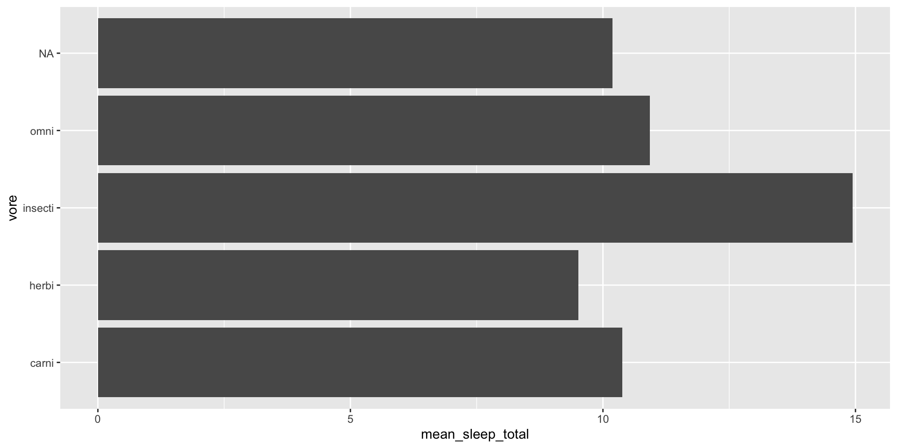
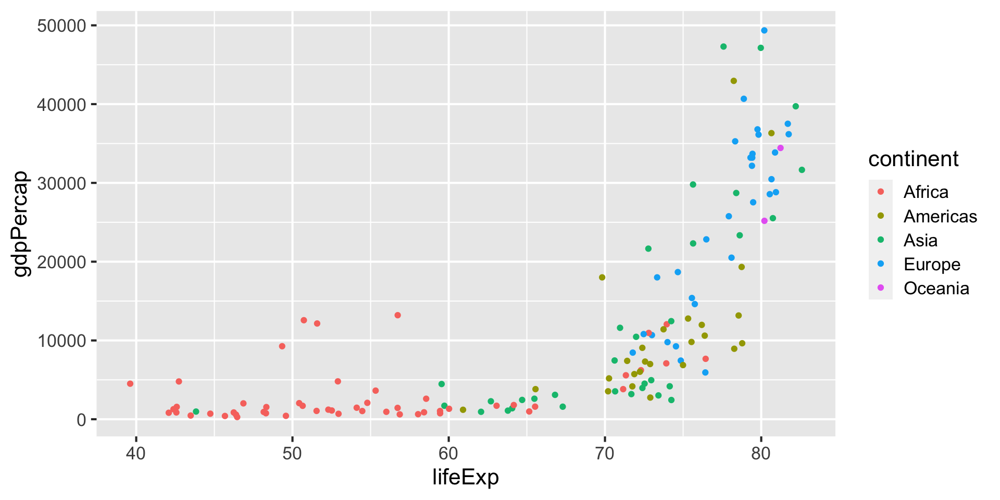
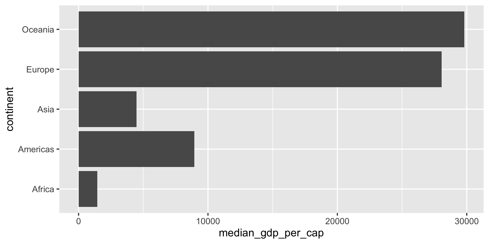

Week 3: Data science with the tidyverse
Topics for today
Understanding
data.frameandtibbleUsing
{readr}for reading dataUsing
{dplyr}for cleaning and wrangling dataUsing
{ggplot2}for some basic exploratory data analysis
What is the tidyverse?
The tidyverse is two things
A collection of packages that are designed to work together really well.
A collection of packages for all stages of the data science workflow.
 Source: R for Data Science1
Source: R for Data Science1
- An opinionated framework for how to work with data.
Some people2 would describe the tidyverse as being an alternative to using base R.
It’s not.
The tidyverse is a useful approach to working with data that has a large ecosystem of tools. We’ll use it to move quickly.
After we’ve been using the tidyverse for a while I’ll come back to this subject and provide further context.
📝 Task: Create a week-3 project
SLIDE 1 OF 1
- Create a new RStudio project called something like
week-3.
Installing and working with the tidyverse
To install the tidyverse collection of packages you need to run this code in the console.
The tidyverse packages are split into two groups:
Updating the tidyverse (I)
In terms of real-world usage, keeping the tidyverse up to date is identical to keeping any R package up to date.
Thee
- When installing a new package the console might prompt you to update to new versions of packages

Updating the tidyverse (II)
In terms of real-world usage, keeping the tidyverse up to date is identical to keeping any R package up to date.
There are 3 different ways you might discover you should update a package.
- When installing a new package the console might prompt you to update to new versions of packages.
When installing a new package the install fails due to an old package.
You hear about an exciting new update to a package.
There is a
tidyverse::tidyverse_update()function but in practice I think it’s very rarely used.
Datasets we’ll be using today (I)
We’re going to be using at least 3 different datasets today:
- The Global Burden of Disease study from the Global Health Data Exchange3.
The Global Burden of Disease study is an extremely useful and rich dataset for understanding global (and comparative) health challenges.
There’s an excellent interactive tool for downloading data from the survey - but you do need to register for a free account to use it.
Datasets we’ll be using today (II)
We’re going to be using at least 3 different datasets today:
- The Global Burden of Disease study from the Global Health Data Exchange3.
- The
msleepdataset from within the{ggplot2}package
Lots (and lots) of R packages have datasets built into them, usually to demonstrate how to use functions inside the package.
The msleep dataset has data about mammalian sleep cycles from Savage and West4
Rows: 83
Columns: 11
$ name <chr> "Cheetah", "Owl monkey", "Mountain beaver", "Greater shor…
$ genus <chr> "Acinonyx", "Aotus", "Aplodontia", "Blarina", "Bos", "Bra…
$ vore <chr> "carni", "omni", "herbi", "omni", "herbi", "herbi", "carn…
$ order <chr> "Carnivora", "Primates", "Rodentia", "Soricomorpha", "Art…
$ conservation <chr> "lc", NA, "nt", "lc", "domesticated", NA, "vu", NA, "dome…
$ sleep_total <dbl> 12.1, 17.0, 14.4, 14.9, 4.0, 14.4, 8.7, 7.0, 10.1, 3.0, 5…
$ sleep_rem <dbl> NA, 1.8, 2.4, 2.3, 0.7, 2.2, 1.4, NA, 2.9, NA, 0.6, 0.8, …
$ sleep_cycle <dbl> NA, NA, NA, 0.1333333, 0.6666667, 0.7666667, 0.3833333, N…
$ awake <dbl> 11.9, 7.0, 9.6, 9.1, 20.0, 9.6, 15.3, 17.0, 13.9, 21.0, 1…
$ brainwt <dbl> NA, 0.01550, NA, 0.00029, 0.42300, NA, NA, NA, 0.07000, 0…
$ bodywt <dbl> 50.000, 0.480, 1.350, 0.019, 600.000, 3.850, 20.490, 0.04…Datasets we’ll be using today (III)
We’re going to be using at least 3 different datasets today:
The Global Burden of Disease study from the Global Health Data Exchange3.
The
msleepdataset from within the{ggplot2}package
- The
gapminderdataset from the{gapminder}package
In 2006 Hans Rosling5 gave an incredible TED talk where he introduced animated bubble charts as a tool to tell stories about global development.
Hans Rosling also founded the Gapminder Foundation to promote sustainable global development.
The {gapminder} package contains a subset of their data.

msleep
📝 Task: Get the msleep dataset
SLIDE 1 OF 1
Add a heading for the msleep dataset.
Load the
{tidyverse}package in the setup code chunkAdd a new code chunk and print the object
msleepto the console
Understanding our object
The datasets embedded into {tidyverse} packages and those generated by reading in data files with {readr}, {readxl} and {haven} are objects known as “tibbles”.
It’s important to understand how this relates to and is different from data.frame.
data.frames (I)
The data.frame is R’s general purpose rectangular data store, it’s therefore the data structure required to build {ggplot2} charts.
The {datasets} package has a number of built-in data.frames, for instance:
lat long depth mag stations
1 -20.42 181.62 562 4.8 41
2 -20.62 181.03 650 4.2 15
3 -26.00 184.10 42 5.4 43
4 -17.97 181.66 626 4.1 19
5 -20.42 181.96 649 4.0 11
6 -19.68 184.31 195 4.0 12The class() function is the way to determine what type of thing/object you’re working with:
data.frames (II)
Because they’re rectangular, data.frames have rows and columns which we can extract separately.
We can print the dimensions of a data.frame with dim()
In Base R there are two ways to extract columns:
data.frame is dead, long live tibble… (I)
The tidyverse introduces an augmented data.frame, called a tibble.
Let’s demonstrate the differences after loading the tidyverse.
The first thing we notice about a tibble is that it prints differently to the console:
lat long depth mag stations
1 -20.42 181.62 562 4.8 41
2 -20.62 181.03 650 4.2 15
3 -26.00 184.10 42 5.4 43
4 -17.97 181.66 626 4.1 19
5 -20.42 181.96 649 4.0 11
6 -19.68 184.31 195 4.0 12
7 -11.70 166.10 82 4.8 43
8 -28.11 181.93 194 4.4 15
9 -28.74 181.74 211 4.7 35
10 -17.47 179.59 622 4.3 19
11 -21.44 180.69 583 4.4 13
12 -12.26 167.00 249 4.6 16
13 -18.54 182.11 554 4.4 19
14 -21.00 181.66 600 4.4 10
15 -20.70 169.92 139 6.1 94
16 -15.94 184.95 306 4.3 11
17 -13.64 165.96 50 6.0 83
18 -17.83 181.50 590 4.5 21
19 -23.50 179.78 570 4.4 13
20 -22.63 180.31 598 4.4 18
21 -20.84 181.16 576 4.5 17
22 -10.98 166.32 211 4.2 12
23 -23.30 180.16 512 4.4 18
24 -30.20 182.00 125 4.7 22
25 -19.66 180.28 431 5.4 57
26 -17.94 181.49 537 4.0 15
27 -14.72 167.51 155 4.6 18
28 -16.46 180.79 498 5.2 79
29 -20.97 181.47 582 4.5 25
30 -19.84 182.37 328 4.4 17
31 -22.58 179.24 553 4.6 21
32 -16.32 166.74 50 4.7 30
33 -15.55 185.05 292 4.8 42
34 -23.55 180.80 349 4.0 10
35 -16.30 186.00 48 4.5 10
36 -25.82 179.33 600 4.3 13
37 -18.73 169.23 206 4.5 17
38 -17.64 181.28 574 4.6 17
39 -17.66 181.40 585 4.1 17
40 -18.82 169.33 230 4.4 11
41 -37.37 176.78 263 4.7 34
42 -15.31 186.10 96 4.6 32
43 -24.97 179.82 511 4.4 23
44 -15.49 186.04 94 4.3 26
45 -19.23 169.41 246 4.6 27
46 -30.10 182.30 56 4.9 34
47 -26.40 181.70 329 4.5 24
48 -11.77 166.32 70 4.4 18
49 -24.12 180.08 493 4.3 21
50 -18.97 185.25 129 5.1 73
51 -18.75 182.35 554 4.2 13
52 -19.26 184.42 223 4.0 15
53 -22.75 173.20 46 4.6 26
54 -21.37 180.67 593 4.3 13
55 -20.10 182.16 489 4.2 16
56 -19.85 182.13 562 4.4 31
57 -22.70 181.00 445 4.5 17
58 -22.06 180.60 584 4.0 11
59 -17.80 181.35 535 4.4 23
60 -24.20 179.20 530 4.3 12
61 -20.69 181.55 582 4.7 35
62 -21.16 182.40 260 4.1 12
63 -13.82 172.38 613 5.0 61
64 -11.49 166.22 84 4.6 32
65 -20.68 181.41 593 4.9 40
66 -17.10 184.93 286 4.7 25
67 -20.14 181.60 587 4.1 13
68 -21.96 179.62 627 5.0 45
69 -20.42 181.86 530 4.5 27
70 -15.46 187.81 40 5.5 91
71 -15.31 185.80 152 4.0 11
72 -19.86 184.35 201 4.5 30
73 -11.55 166.20 96 4.3 14
74 -23.74 179.99 506 5.2 75
75 -17.70 181.23 546 4.4 35
76 -23.54 180.04 564 4.3 15
77 -19.21 184.70 197 4.1 11
78 -12.11 167.06 265 4.5 23
79 -21.81 181.71 323 4.2 15
80 -28.98 181.11 304 5.3 60
81 -34.02 180.21 75 5.2 65
82 -23.84 180.99 367 4.5 27
83 -19.57 182.38 579 4.6 38
84 -20.12 183.40 284 4.3 15
85 -17.70 181.70 450 4.0 11
86 -19.66 184.31 170 4.3 15
87 -21.50 170.50 117 4.7 32
88 -23.64 179.96 538 4.5 26
89 -15.43 186.30 123 4.2 16
90 -15.41 186.44 69 4.3 42
91 -15.48 167.53 128 5.1 61
92 -13.36 167.06 236 4.7 22
93 -20.64 182.02 497 5.2 64
94 -19.72 169.71 271 4.2 14
95 -15.44 185.26 224 4.2 21
96 -19.73 182.40 375 4.0 18
97 -27.24 181.11 365 4.5 21
98 -18.16 183.41 306 5.2 54
99 -13.66 166.54 50 5.1 45
100 -24.57 179.92 484 4.7 33
101 -16.98 185.61 108 4.1 12
102 -26.20 178.41 583 4.6 25
103 -21.88 180.39 608 4.7 30
104 -33.00 181.60 72 4.7 22
105 -21.33 180.69 636 4.6 29
106 -19.44 183.50 293 4.2 15
107 -34.89 180.60 42 4.4 25
108 -20.24 169.49 100 4.6 22
109 -22.55 185.90 42 5.7 76
110 -36.95 177.81 146 5.0 35
111 -15.75 185.23 280 4.5 28
112 -16.85 182.31 388 4.2 14
113 -19.06 182.45 477 4.0 16
114 -26.11 178.30 617 4.8 39
115 -26.20 178.35 606 4.4 21
116 -26.13 178.31 609 4.2 25
117 -13.66 172.23 46 5.3 67
118 -13.47 172.29 64 4.7 14
119 -14.60 167.40 178 4.8 52
120 -18.96 169.48 248 4.2 13
121 -14.65 166.97 82 4.8 28
122 -19.90 178.90 81 4.3 11
123 -22.05 180.40 606 4.7 27
124 -19.22 182.43 571 4.5 23
125 -31.24 180.60 328 4.4 18
126 -17.93 167.89 49 5.1 43
127 -19.30 183.84 517 4.2 21
128 -26.53 178.57 600 5.0 69
129 -27.72 181.70 94 4.8 59
130 -19.19 183.51 307 4.3 19
131 -17.43 185.43 189 4.5 22
132 -17.05 181.22 527 4.2 24
133 -19.52 168.98 63 4.5 21
134 -23.71 180.30 510 4.6 30
135 -21.30 180.82 624 4.3 14
136 -16.24 168.02 53 4.7 12
137 -16.14 187.32 42 5.1 68
138 -23.95 182.80 199 4.6 14
139 -25.20 182.60 149 4.9 31
140 -18.84 184.16 210 4.2 17
141 -12.66 169.46 658 4.6 43
142 -20.65 181.40 582 4.0 14
143 -13.23 167.10 220 5.0 46
144 -29.91 181.43 205 4.4 34
145 -14.31 173.50 614 4.2 23
146 -20.10 184.40 186 4.2 10
147 -17.80 185.17 97 4.4 22
148 -21.27 173.49 48 4.9 42
149 -23.58 180.17 462 5.3 63
150 -17.90 181.50 573 4.0 19
151 -23.34 184.50 56 5.7 106
152 -15.56 167.62 127 6.4 122
153 -23.83 182.56 229 4.3 24
154 -11.80 165.80 112 4.2 20
155 -15.54 167.68 140 4.7 16
156 -20.65 181.32 597 4.7 39
157 -11.75 166.07 69 4.2 14
158 -24.81 180.00 452 4.3 19
159 -20.90 169.84 93 4.9 31
160 -11.34 166.24 103 4.6 30
161 -17.98 180.50 626 4.1 19
162 -24.34 179.52 504 4.8 34
163 -13.86 167.16 202 4.6 30
164 -35.56 180.20 42 4.6 32
165 -35.48 179.90 59 4.8 35
166 -34.20 179.43 40 5.0 37
167 -26.00 182.12 205 5.6 98
168 -19.89 183.84 244 5.3 73
169 -23.43 180.00 553 4.7 41
170 -18.89 169.42 239 4.5 27
171 -17.82 181.83 640 4.3 24
172 -25.68 180.34 434 4.6 41
173 -20.20 180.90 627 4.1 11
174 -15.20 184.68 99 4.1 14
175 -15.03 182.29 399 4.1 10
176 -32.22 180.20 216 5.7 90
177 -22.64 180.64 544 5.0 50
178 -17.42 185.16 206 4.5 22
179 -17.84 181.48 542 4.1 20
180 -15.02 184.24 339 4.6 27
181 -18.04 181.75 640 4.5 47
182 -24.60 183.50 67 4.3 25
183 -19.88 184.30 161 4.4 17
184 -20.30 183.00 375 4.2 15
185 -20.45 181.85 534 4.1 14
186 -17.67 187.09 45 4.9 62
187 -22.30 181.90 309 4.3 11
188 -19.85 181.85 576 4.9 54
189 -24.27 179.88 523 4.6 24
190 -15.85 185.13 290 4.6 29
191 -20.02 184.09 234 5.3 71
192 -18.56 169.31 223 4.7 35
193 -17.87 182.00 569 4.6 12
194 -24.08 179.50 605 4.1 21
195 -32.20 179.61 422 4.6 41
196 -20.36 181.19 637 4.2 23
197 -23.85 182.53 204 4.6 27
198 -24.00 182.75 175 4.5 14
199 -20.41 181.74 538 4.3 31
200 -17.72 180.30 595 5.2 74
201 -19.67 182.18 360 4.3 23
202 -17.70 182.20 445 4.0 12
203 -16.23 183.59 367 4.7 35
204 -26.72 183.35 190 4.5 36
205 -12.95 169.09 629 4.5 19
206 -21.97 182.32 261 4.3 13
207 -21.96 180.54 603 5.2 66
208 -20.32 181.69 508 4.5 14
209 -30.28 180.62 350 4.7 32
210 -20.20 182.30 533 4.2 11
211 -30.66 180.13 411 4.7 42
212 -16.17 184.10 338 4.3 13
213 -28.25 181.71 226 4.1 19
214 -20.47 185.68 93 5.4 85
215 -23.55 180.27 535 4.3 22
216 -20.94 181.58 573 4.3 21
217 -26.67 182.40 186 4.2 17
218 -18.13 181.52 618 4.6 41
219 -20.21 183.83 242 4.4 29
220 -18.31 182.39 342 4.2 14
221 -16.52 185.70 90 4.7 30
222 -22.36 171.65 130 4.6 39
223 -22.43 184.48 65 4.9 48
224 -20.37 182.10 397 4.2 22
225 -23.77 180.16 505 4.5 26
226 -13.65 166.66 71 4.9 52
227 -21.55 182.90 207 4.2 18
228 -16.24 185.75 154 4.5 22
229 -23.73 182.53 232 5.0 55
230 -22.34 171.52 106 5.0 43
231 -19.40 180.94 664 4.7 34
232 -24.64 180.81 397 4.3 24
233 -16.00 182.82 431 4.4 16
234 -19.62 185.35 57 4.9 31
235 -23.84 180.13 525 4.5 15
236 -23.54 179.93 574 4.0 12
237 -28.23 182.68 74 4.4 20
238 -21.68 180.63 617 5.0 63
239 -13.44 166.53 44 4.7 27
240 -24.96 180.22 470 4.8 41
241 -20.08 182.74 298 4.5 33
242 -24.36 182.84 148 4.1 16
243 -14.70 166.00 48 5.3 16
244 -18.20 183.68 107 4.8 52
245 -16.65 185.51 218 5.0 52
246 -18.11 181.67 597 4.6 28
247 -17.95 181.65 619 4.3 26
248 -15.50 186.90 46 4.7 18
249 -23.36 180.01 553 5.3 61
250 -19.15 169.50 150 4.2 12
251 -10.97 166.26 180 4.7 26
252 -14.85 167.24 97 4.5 26
253 -17.80 181.38 587 5.1 47
254 -22.50 170.40 106 4.9 38
255 -29.10 182.10 179 4.4 19
256 -20.32 180.88 680 4.2 22
257 -16.09 184.89 304 4.6 34
258 -19.18 169.33 254 4.7 35
259 -23.81 179.36 521 4.2 23
260 -23.79 179.89 526 4.9 43
261 -19.02 184.23 270 5.1 72
262 -20.90 181.51 548 4.7 32
263 -19.06 169.01 158 4.4 10
264 -17.88 181.47 562 4.4 27
265 -19.41 183.05 300 4.2 16
266 -26.17 184.20 65 4.9 37
267 -14.95 167.24 130 4.6 16
268 -18.73 168.80 82 4.4 14
269 -20.21 182.37 482 4.6 37
270 -21.29 180.85 607 4.5 23
271 -19.76 181.41 105 4.4 15
272 -22.09 180.38 590 4.9 35
273 -23.80 179.90 498 4.1 12
274 -20.16 181.99 504 4.2 11
275 -22.13 180.38 577 5.7 104
276 -17.44 181.40 529 4.6 25
277 -23.33 180.18 528 5.0 59
278 -24.78 179.22 492 4.3 16
279 -22.00 180.52 561 4.5 19
280 -19.13 182.51 579 5.2 56
281 -30.72 180.10 413 4.4 22
282 -22.32 180.54 565 4.2 12
283 -16.45 177.77 138 4.6 17
284 -17.70 185.00 383 4.0 10
285 -17.95 184.68 260 4.4 21
286 -24.40 179.85 522 4.7 29
287 -19.30 180.60 671 4.2 16
288 -21.13 185.32 123 4.7 36
289 -18.07 181.57 572 4.5 26
290 -20.60 182.28 529 5.0 50
291 -18.48 181.49 641 5.0 49
292 -13.34 166.20 67 4.8 18
293 -20.92 181.50 546 4.6 31
294 -25.31 179.69 507 4.6 35
295 -15.24 186.21 158 5.0 57
296 -16.40 185.86 148 5.0 47
297 -24.57 178.40 562 5.6 80
298 -17.94 181.51 601 4.0 16
299 -30.64 181.20 175 4.0 16
300 -18.64 169.32 260 4.6 23
301 -13.09 169.28 654 4.4 22
302 -19.68 184.14 242 4.8 40
303 -16.44 185.74 126 4.7 30
304 -21.09 181.38 555 4.6 15
305 -14.99 171.39 637 4.3 21
306 -23.30 179.70 500 4.7 29
307 -17.68 181.36 515 4.1 19
308 -22.00 180.53 583 4.9 20
309 -21.38 181.39 501 4.6 36
310 -32.62 181.50 55 4.8 26
311 -13.05 169.58 644 4.9 68
312 -12.93 169.63 641 5.1 57
313 -18.60 181.91 442 5.4 82
314 -21.34 181.41 464 4.5 21
315 -21.48 183.78 200 4.9 54
316 -17.40 181.02 479 4.4 14
317 -17.32 181.03 497 4.1 13
318 -18.77 169.24 218 5.3 53
319 -26.16 179.50 492 4.5 25
320 -12.59 167.10 325 4.9 26
321 -14.82 167.32 123 4.8 28
322 -21.79 183.48 210 5.2 69
323 -19.83 182.04 575 4.4 23
324 -29.50 182.31 129 4.4 14
325 -12.49 166.36 74 4.9 55
326 -26.10 182.30 49 4.4 11
327 -21.04 181.20 483 4.2 10
328 -10.78 165.77 93 4.6 20
329 -20.76 185.77 118 4.6 15
330 -11.41 166.24 83 5.3 55
331 -19.10 183.87 61 5.3 42
332 -23.91 180.00 534 4.5 11
333 -27.33 182.60 42 4.4 11
334 -12.25 166.60 219 5.0 28
335 -23.49 179.07 544 5.1 58
336 -27.18 182.18 56 4.5 14
337 -25.80 182.10 68 4.5 26
338 -27.19 182.18 69 5.4 68
339 -27.27 182.38 45 4.5 16
340 -27.10 182.18 43 4.7 17
341 -27.22 182.28 65 4.2 14
342 -27.38 181.70 80 4.8 13
343 -27.27 182.50 51 4.5 13
344 -27.54 182.50 68 4.3 12
345 -27.20 182.39 69 4.3 14
346 -27.71 182.47 103 4.3 11
347 -27.60 182.40 61 4.6 11
348 -27.38 182.39 69 4.5 12
349 -21.54 185.48 51 5.0 29
350 -27.21 182.43 55 4.6 10
351 -28.96 182.61 54 4.6 15
352 -12.01 166.29 59 4.9 27
353 -17.46 181.32 573 4.1 17
354 -30.17 182.02 56 5.5 68
355 -27.27 182.36 65 4.7 21
356 -17.79 181.32 587 5.0 49
357 -22.19 171.40 150 5.1 49
358 -17.10 182.68 403 5.5 82
359 -27.18 182.53 60 4.6 21
360 -11.64 166.47 130 4.7 19
361 -17.98 181.58 590 4.2 14
362 -16.90 185.72 135 4.0 22
363 -21.98 179.60 583 5.4 67
364 -32.14 179.90 406 4.3 19
365 -18.80 169.21 221 4.4 16
366 -26.78 183.61 40 4.6 22
367 -20.43 182.37 502 5.1 48
368 -18.30 183.20 103 4.5 14
369 -15.83 182.51 423 4.2 21
370 -23.44 182.93 158 4.1 20
371 -23.73 179.99 527 5.1 49
372 -19.89 184.08 219 5.4 105
373 -17.59 181.09 536 5.1 61
374 -19.77 181.40 630 5.1 54
375 -20.31 184.06 249 4.4 21
376 -15.33 186.75 48 5.7 123
377 -18.20 181.60 553 4.4 14
378 -15.36 186.66 112 5.1 57
379 -15.29 186.42 153 4.6 31
380 -15.36 186.71 130 5.5 95
381 -16.24 167.95 188 5.1 68
382 -13.47 167.14 226 4.4 26
383 -25.50 182.82 124 5.0 25
384 -14.32 167.33 204 5.0 49
385 -20.04 182.01 605 5.1 49
386 -28.83 181.66 221 5.1 63
387 -17.82 181.49 573 4.2 14
388 -27.23 180.98 401 4.5 39
389 -10.72 165.99 195 4.0 14
390 -27.00 183.88 56 4.9 36
391 -20.36 186.16 102 4.3 21
392 -27.17 183.68 44 4.8 27
393 -20.94 181.26 556 4.4 21
394 -17.46 181.90 417 4.2 14
395 -21.04 181.20 591 4.9 45
396 -23.70 179.60 646 4.2 21
397 -17.72 181.42 565 5.3 89
398 -15.87 188.13 52 5.0 30
399 -17.84 181.30 535 5.7 112
400 -13.45 170.30 641 5.3 93
401 -30.80 182.16 41 4.7 24
402 -11.63 166.14 109 4.6 36
403 -30.40 181.40 40 4.3 17
404 -26.18 178.59 548 5.4 65
405 -15.70 184.50 118 4.4 30
406 -17.95 181.50 593 4.3 16
407 -20.51 182.30 492 4.3 23
408 -15.36 167.51 123 4.7 28
409 -23.61 180.23 475 4.4 26
410 -33.20 181.60 153 4.2 21
411 -17.68 186.80 112 4.5 35
412 -22.24 184.56 99 4.8 57
413 -20.07 169.14 66 4.8 37
414 -25.04 180.10 481 4.3 15
415 -21.50 185.20 139 4.4 15
416 -14.28 167.26 211 5.1 51
417 -14.43 167.26 151 4.4 17
418 -32.70 181.70 211 4.4 40
419 -34.10 181.80 246 4.3 23
420 -19.70 186.20 47 4.8 19
421 -24.19 180.38 484 4.3 27
422 -26.60 182.77 119 4.5 29
423 -17.04 186.80 70 4.1 22
424 -22.10 179.71 579 5.1 58
425 -32.60 180.90 57 4.7 44
426 -33.00 182.40 176 4.6 28
427 -20.58 181.24 602 4.7 44
428 -20.61 182.60 488 4.6 12
429 -19.47 169.15 149 4.4 15
430 -17.47 180.96 546 4.2 23
431 -18.40 183.40 343 4.1 10
432 -23.33 180.26 530 4.7 22
433 -18.55 182.23 563 4.0 17
434 -26.16 178.47 537 4.8 33
435 -21.80 183.20 325 4.4 19
436 -27.63 182.93 80 4.3 14
437 -18.89 169.48 259 4.4 21
438 -20.30 182.30 476 4.5 10
439 -20.56 182.04 499 4.5 29
440 -16.10 185.32 257 4.7 30
441 -12.66 166.37 165 4.3 18
442 -21.05 184.68 136 4.7 29
443 -17.97 168.52 146 4.8 33
444 -19.83 182.54 524 4.6 14
445 -22.55 183.81 82 5.1 68
446 -22.28 183.52 90 4.7 19
447 -15.72 185.64 138 4.3 21
448 -20.85 181.59 499 5.1 91
449 -21.11 181.50 538 5.5 104
450 -25.31 180.15 467 4.5 25
451 -26.46 182.50 184 4.3 11
452 -24.09 179.68 538 4.3 21
453 -16.96 167.70 45 4.7 23
454 -23.19 182.80 237 4.3 18
455 -20.81 184.70 162 4.3 20
456 -15.03 167.32 136 4.6 20
457 -18.06 181.59 604 4.5 23
458 -19.00 185.60 107 4.5 15
459 -23.53 179.99 538 5.4 87
460 -18.18 180.63 639 4.6 39
461 -15.66 186.80 45 4.4 11
462 -18.00 180.62 636 5.0 100
463 -18.08 180.70 628 5.2 72
464 -18.05 180.86 632 4.4 15
465 -29.90 181.16 215 5.1 51
466 -20.90 181.90 556 4.4 17
467 -15.61 167.50 135 4.4 21
468 -16.03 185.43 297 4.8 25
469 -17.68 181.11 568 4.4 22
470 -31.94 180.57 168 4.7 39
471 -19.14 184.36 269 4.7 31
472 -18.00 185.48 143 4.4 29
473 -16.95 185.94 95 4.3 12
474 -10.79 166.06 142 5.0 40
475 -20.83 185.90 104 4.5 19
476 -32.90 181.60 169 4.6 27
477 -37.93 177.47 65 5.4 65
478 -29.09 183.20 54 4.6 23
479 -23.56 180.23 474 4.5 13
480 -19.60 185.20 125 4.4 13
481 -21.39 180.68 617 4.5 18
482 -14.85 184.87 294 4.1 10
483 -22.70 183.30 180 4.0 13
484 -32.42 181.21 47 4.9 39
485 -17.90 181.30 593 4.1 13
486 -23.58 183.40 94 5.2 79
487 -34.40 180.50 201 4.4 41
488 -17.61 181.20 537 4.1 11
489 -21.07 181.13 594 4.9 43
490 -13.84 170.62 638 4.6 20
491 -30.24 181.63 80 4.5 17
492 -18.49 169.04 211 4.8 30
493 -23.45 180.23 520 4.2 19
494 -16.04 183.54 384 4.2 23
495 -17.14 185.31 223 4.1 15
496 -22.54 172.91 54 5.5 71
497 -15.90 185.30 57 4.4 19
498 -30.04 181.20 49 4.8 20
499 -24.03 180.22 508 4.2 23
500 -18.89 184.46 242 4.8 36
501 -16.51 187.10 62 4.9 46
502 -20.10 186.30 63 4.6 19
503 -21.06 183.81 203 4.5 34
504 -13.07 166.87 132 4.4 24
505 -23.46 180.09 543 4.6 28
506 -19.41 182.30 589 4.2 19
507 -11.81 165.98 51 4.7 28
508 -11.76 165.96 45 4.4 51
509 -12.08 165.76 63 4.5 51
510 -25.59 180.02 485 4.9 48
511 -26.54 183.63 66 4.7 34
512 -20.90 184.28 58 5.5 92
513 -16.99 187.00 70 4.7 30
514 -23.46 180.17 541 4.6 32
515 -17.81 181.82 598 4.1 14
516 -15.17 187.20 50 4.7 28
517 -11.67 166.02 102 4.6 21
518 -20.75 184.52 144 4.3 25
519 -19.50 186.90 58 4.4 20
520 -26.18 179.79 460 4.7 44
521 -20.66 185.77 69 4.3 25
522 -19.22 182.54 570 4.1 22
523 -24.68 183.33 70 4.7 30
524 -15.43 167.38 137 4.5 16
525 -32.45 181.15 41 5.5 81
526 -21.31 180.84 586 4.5 17
527 -15.44 167.18 140 4.6 44
528 -13.26 167.01 213 5.1 70
529 -15.26 183.13 393 4.4 28
530 -33.57 180.80 51 4.7 35
531 -15.77 167.01 64 5.5 73
532 -15.79 166.83 45 4.6 39
533 -21.00 183.20 296 4.0 16
534 -16.28 166.94 50 4.6 24
535 -23.28 184.60 44 4.8 34
536 -16.10 167.25 68 4.7 36
537 -17.70 181.31 549 4.7 33
538 -15.96 166.69 150 4.2 20
539 -15.95 167.34 47 5.4 87
540 -17.56 181.59 543 4.6 34
541 -15.90 167.42 40 5.5 86
542 -15.29 166.90 100 4.2 15
543 -15.86 166.85 85 4.5 22
544 -16.20 166.80 98 4.5 21
545 -15.71 166.91 58 4.8 20
546 -16.45 167.54 125 4.6 18
547 -11.54 166.18 89 5.4 80
548 -19.61 181.91 590 4.6 34
549 -15.61 187.15 49 5.0 30
550 -21.16 181.41 543 4.3 17
551 -20.65 182.22 506 4.3 24
552 -20.33 168.71 40 4.8 38
553 -15.08 166.62 42 4.7 23
554 -23.28 184.61 76 4.7 36
555 -23.44 184.60 63 4.8 27
556 -23.12 184.42 104 4.2 17
557 -23.65 184.46 93 4.2 16
558 -22.91 183.95 64 5.9 118
559 -22.06 180.47 587 4.6 28
560 -13.56 166.49 83 4.5 25
561 -17.99 181.57 579 4.9 49
562 -23.92 184.47 40 4.7 17
563 -30.69 182.10 62 4.9 25
564 -21.92 182.80 273 5.3 78
565 -25.04 180.97 393 4.2 21
566 -19.92 183.91 264 4.2 23
567 -27.75 182.26 174 4.5 18
568 -17.71 181.18 574 5.2 67
569 -19.60 183.84 309 4.5 23
570 -34.68 179.82 75 5.6 79
571 -14.46 167.26 195 5.2 87
572 -18.85 187.55 44 4.8 35
573 -17.02 182.41 420 4.5 29
574 -20.41 186.51 63 5.0 28
575 -18.18 182.04 609 4.4 26
576 -16.49 187.80 40 4.5 18
577 -17.74 181.31 575 4.6 42
578 -20.49 181.69 559 4.5 24
579 -18.51 182.64 405 5.2 74
580 -27.28 183.40 70 5.1 54
581 -15.90 167.16 41 4.8 42
582 -20.57 181.33 605 4.3 18
583 -11.25 166.36 130 5.1 55
584 -20.04 181.87 577 4.7 19
585 -20.89 181.25 599 4.6 20
586 -16.62 186.74 82 4.8 51
587 -20.09 168.75 50 4.6 23
588 -24.96 179.87 480 4.4 25
589 -20.95 181.42 559 4.6 27
590 -23.31 179.27 566 5.1 49
591 -20.95 181.06 611 4.3 20
592 -21.58 181.90 409 4.4 19
593 -13.62 167.15 209 4.7 30
594 -12.72 166.28 70 4.8 47
595 -21.79 185.00 74 4.1 15
596 -20.48 169.76 134 4.6 33
597 -12.84 166.78 150 4.9 35
598 -17.02 182.93 406 4.0 17
599 -23.89 182.39 243 4.7 32
600 -23.07 184.03 89 4.7 32
601 -27.98 181.96 53 5.2 89
602 -28.10 182.25 68 4.6 18
603 -21.24 180.81 605 4.6 34
604 -21.24 180.86 615 4.9 23
605 -19.89 174.46 546 5.7 99
606 -32.82 179.80 176 4.7 26
607 -22.00 185.50 52 4.4 18
608 -21.57 185.62 66 4.9 38
609 -24.50 180.92 377 4.8 43
610 -33.03 180.20 186 4.6 27
611 -30.09 182.40 51 4.4 18
612 -22.75 170.99 67 4.8 35
613 -17.99 168.98 234 4.7 28
614 -19.60 181.87 597 4.2 18
615 -15.65 186.26 64 5.1 54
616 -17.78 181.53 511 4.8 56
617 -22.04 184.91 47 4.9 47
618 -20.06 168.69 49 5.1 49
619 -18.07 181.54 546 4.3 28
620 -12.85 165.67 75 4.4 30
621 -33.29 181.30 60 4.7 33
622 -34.63 179.10 278 4.7 24
623 -24.18 179.02 550 5.3 86
624 -23.78 180.31 518 5.1 71
625 -22.37 171.50 116 4.9 38
626 -23.97 179.91 518 4.5 23
627 -34.12 181.75 75 4.7 41
628 -25.25 179.86 491 4.2 23
629 -22.87 172.65 56 5.1 50
630 -18.48 182.37 376 4.8 57
631 -21.46 181.02 584 4.2 18
632 -28.56 183.47 48 4.8 56
633 -28.56 183.59 53 4.4 20
634 -21.30 180.92 617 4.5 26
635 -20.08 183.22 294 4.3 18
636 -18.82 182.21 417 5.6 129
637 -19.51 183.97 280 4.0 16
638 -12.05 167.39 332 5.0 36
639 -17.40 186.54 85 4.2 28
640 -23.93 180.18 525 4.6 31
641 -21.23 181.09 613 4.6 18
642 -16.23 167.91 182 4.5 28
643 -28.15 183.40 57 5.0 32
644 -20.81 185.01 79 4.7 42
645 -20.72 181.41 595 4.6 36
646 -23.29 184.00 164 4.8 50
647 -38.46 176.03 148 4.6 44
648 -15.48 186.73 82 4.4 17
649 -37.03 177.52 153 5.6 87
650 -20.48 181.38 556 4.2 13
651 -18.12 181.88 649 5.4 88
652 -18.17 181.98 651 4.8 43
653 -11.40 166.07 93 5.6 94
654 -23.10 180.12 533 4.4 27
655 -14.28 170.34 642 4.7 29
656 -22.87 171.72 47 4.6 27
657 -17.59 180.98 548 5.1 79
658 -27.60 182.10 154 4.6 22
659 -17.94 180.60 627 4.5 29
660 -17.88 180.58 622 4.2 23
661 -30.01 180.80 286 4.8 43
662 -19.19 182.30 390 4.9 48
663 -18.14 180.87 624 5.5 105
664 -23.46 180.11 539 5.0 41
665 -18.44 181.04 624 4.2 21
666 -18.21 180.87 631 5.2 69
667 -18.26 180.98 631 4.8 36
668 -15.85 184.83 299 4.4 30
669 -23.82 180.09 498 4.8 40
670 -18.60 184.28 255 4.4 31
671 -17.80 181.32 539 4.1 12
672 -10.78 166.10 195 4.9 45
673 -18.12 181.71 594 4.6 24
674 -19.34 182.62 573 4.5 32
675 -15.34 167.10 128 5.3 18
676 -24.97 182.85 137 4.8 40
677 -15.97 186.08 143 4.6 41
678 -23.47 180.24 511 4.8 37
679 -23.11 179.15 564 4.7 17
680 -20.54 181.66 559 4.9 50
681 -18.92 169.37 248 5.3 60
682 -20.16 184.27 210 4.4 27
683 -25.48 180.94 390 4.6 33
684 -18.19 181.74 616 4.3 17
685 -15.35 186.40 98 4.4 17
686 -18.69 169.10 218 4.2 27
687 -18.89 181.24 655 4.1 14
688 -17.61 183.32 356 4.2 15
689 -20.93 181.54 564 5.0 64
690 -17.60 181.50 548 4.1 10
691 -17.96 181.40 655 4.3 20
692 -18.80 182.41 385 5.2 67
693 -20.61 182.44 518 4.2 10
694 -20.74 181.53 598 4.5 36
695 -25.23 179.86 476 4.4 29
696 -23.90 179.90 579 4.4 16
697 -18.07 181.58 603 5.0 65
698 -15.43 185.19 249 4.0 11
699 -14.30 167.32 208 4.8 25
700 -18.04 181.57 587 5.0 51
701 -13.90 167.18 221 4.2 21
702 -17.64 177.01 545 5.2 91
703 -17.98 181.51 586 5.2 68
704 -25.00 180.00 488 4.5 10
705 -19.45 184.48 246 4.3 15
706 -16.11 187.48 61 4.5 19
707 -23.73 179.98 524 4.6 11
708 -17.74 186.78 104 5.1 71
709 -21.56 183.23 271 4.4 36
710 -20.97 181.72 487 4.3 16
711 -15.45 186.73 83 4.7 37
712 -15.93 167.91 183 5.6 109
713 -21.47 185.86 55 4.9 46
714 -21.44 170.45 166 5.1 22
715 -22.16 180.49 586 4.6 13
716 -13.36 172.76 618 4.4 18
717 -21.22 181.51 524 4.8 49
718 -26.10 182.50 133 4.2 17
719 -18.35 185.27 201 4.7 57
720 -17.20 182.90 383 4.1 11
721 -22.42 171.40 86 4.7 33
722 -17.91 181.48 555 4.0 17
723 -26.53 178.30 605 4.9 43
724 -26.50 178.29 609 5.0 50
725 -16.31 168.08 204 4.5 16
726 -18.76 169.71 287 4.4 23
727 -17.10 182.80 390 4.0 14
728 -19.28 182.78 348 4.5 30
729 -23.50 180.00 550 4.7 23
730 -21.26 181.69 487 4.4 20
731 -17.97 181.48 578 4.7 43
732 -26.02 181.20 361 4.7 32
733 -30.30 180.80 275 4.0 14
734 -24.89 179.67 498 4.2 14
735 -14.57 167.24 162 4.5 18
736 -15.40 186.87 78 4.7 44
737 -22.06 183.95 134 4.5 17
738 -25.14 178.42 554 4.1 15
739 -20.30 181.40 608 4.6 13
740 -25.28 181.17 367 4.3 25
741 -20.63 181.61 599 4.6 30
742 -19.02 186.83 45 5.2 65
743 -22.10 185.30 50 4.6 22
744 -38.59 175.70 162 4.7 36
745 -19.30 183.00 302 5.0 65
746 -31.03 181.59 57 5.2 49
747 -30.51 181.30 203 4.4 20
748 -22.55 183.34 66 4.6 18
749 -22.14 180.64 591 4.5 18
750 -25.60 180.30 440 4.0 12
751 -18.04 181.84 611 4.2 20
752 -21.29 185.77 57 5.3 69
753 -21.08 180.85 627 5.9 119
754 -20.64 169.66 89 4.9 42
755 -24.41 180.03 500 4.5 34
756 -12.16 167.03 264 4.4 14
757 -17.10 185.90 127 5.4 75
758 -21.13 185.60 85 5.3 86
759 -12.34 167.43 50 5.1 47
760 -16.43 186.73 75 4.1 20
761 -20.70 184.30 182 4.3 17
762 -21.18 180.92 619 4.5 18
763 -17.78 185.33 223 4.1 10
764 -21.57 183.86 156 5.1 70
765 -13.70 166.75 46 5.3 71
766 -12.27 167.41 50 4.5 29
767 -19.10 184.52 230 4.1 16
768 -19.85 184.51 184 4.4 26
769 -11.37 166.55 188 4.7 24
770 -20.70 186.30 80 4.0 10
771 -20.24 185.10 86 5.1 61
772 -16.40 182.73 391 4.0 16
773 -19.60 184.53 199 4.3 21
774 -21.63 180.77 592 4.3 21
775 -21.60 180.50 595 4.0 22
776 -21.77 181.00 618 4.1 10
777 -21.80 183.60 213 4.4 17
778 -21.05 180.90 616 4.3 10
779 -10.80 165.80 175 4.2 12
780 -17.90 181.50 589 4.0 12
781 -22.26 171.44 83 4.5 25
782 -22.33 171.46 119 4.7 32
783 -24.04 184.85 70 5.0 48
784 -20.40 186.10 74 4.3 22
785 -15.00 184.62 40 5.1 54
786 -27.87 183.40 87 4.7 34
787 -14.12 166.64 63 5.3 69
788 -23.61 180.27 537 5.0 63
789 -21.56 185.50 47 4.5 29
790 -21.19 181.58 490 5.0 77
791 -18.07 181.65 593 4.1 16
792 -26.00 178.43 644 4.9 27
793 -20.21 181.90 576 4.1 16
794 -28.00 182.00 199 4.0 16
795 -20.74 180.70 589 4.4 27
796 -31.80 180.60 178 4.5 19
797 -18.91 169.46 248 4.4 33
798 -20.45 182.10 500 4.5 37
799 -22.90 183.80 71 4.3 19
800 -18.11 181.63 568 4.3 36
801 -23.80 184.70 42 5.0 36
802 -23.42 180.21 510 4.5 37
803 -23.20 184.80 97 4.5 13
804 -12.93 169.52 663 4.4 30
805 -21.14 181.06 625 4.5 35
806 -19.13 184.97 210 4.1 22
807 -21.08 181.30 557 4.9 78
808 -20.07 181.75 582 4.7 27
809 -20.90 182.02 402 4.3 18
810 -25.04 179.84 474 4.6 32
811 -21.85 180.89 577 4.6 43
812 -19.34 186.59 56 5.2 49
813 -15.83 167.10 43 4.5 19
814 -23.73 183.00 118 4.3 11
815 -18.10 181.72 544 4.6 52
816 -22.12 180.49 532 4.0 14
817 -15.39 185.10 237 4.5 39
818 -16.21 186.52 111 4.8 30
819 -21.75 180.67 595 4.6 30
820 -22.10 180.40 603 4.1 11
821 -24.97 179.54 505 4.9 50
822 -19.36 186.36 100 4.7 40
823 -22.14 179.62 587 4.1 23
824 -21.48 182.44 364 4.3 20
825 -18.54 168.93 100 4.4 17
826 -21.62 182.40 350 4.0 12
827 -13.40 166.90 228 4.8 15
828 -15.50 185.30 93 4.4 25
829 -15.67 185.23 66 4.4 34
830 -21.78 183.11 225 4.6 21
831 -30.63 180.90 334 4.2 28
832 -15.70 185.10 70 4.1 15
833 -19.20 184.37 220 4.2 18
834 -19.70 182.44 397 4.0 12
835 -19.40 182.29 326 4.1 15
836 -15.85 185.90 121 4.1 17
837 -17.38 168.63 209 4.7 29
838 -24.33 179.97 510 4.8 44
839 -20.89 185.26 54 5.1 44
840 -18.97 169.44 242 5.0 41
841 -17.99 181.62 574 4.8 38
842 -15.80 185.25 82 4.4 39
843 -25.42 182.65 102 5.0 36
844 -21.60 169.90 43 5.2 56
845 -26.06 180.05 432 4.2 19
846 -17.56 181.23 580 4.1 16
847 -25.63 180.26 464 4.8 60
848 -25.46 179.98 479 4.5 27
849 -22.23 180.48 581 5.0 54
850 -21.55 181.39 513 5.1 81
851 -15.18 185.93 77 4.1 16
852 -13.79 166.56 68 4.7 41
853 -15.18 167.23 71 5.2 59
854 -18.78 186.72 68 4.8 48
855 -17.90 181.41 586 4.5 33
856 -18.50 185.40 243 4.0 11
857 -14.82 171.17 658 4.7 49
858 -15.65 185.17 315 4.1 15
859 -30.01 181.15 210 4.3 17
860 -13.16 167.24 278 4.3 17
861 -21.03 180.78 638 4.0 14
862 -21.40 180.78 615 4.7 51
863 -17.93 181.89 567 4.1 27
864 -20.87 181.70 560 4.2 13
865 -12.01 166.66 99 4.8 36
866 -19.10 169.63 266 4.8 31
867 -22.85 181.37 397 4.2 15
868 -17.08 185.96 180 4.2 29
869 -21.14 174.21 40 5.7 78
870 -12.23 167.02 242 6.0 132
871 -20.91 181.57 530 4.2 20
872 -11.38 167.05 133 4.5 32
873 -11.02 167.01 62 4.9 36
874 -22.09 180.58 580 4.4 22
875 -17.80 181.20 530 4.0 15
876 -18.94 182.43 566 4.3 20
877 -18.85 182.20 501 4.2 23
878 -21.91 181.28 548 4.5 30
879 -22.03 179.77 587 4.8 31
880 -18.10 181.63 592 4.4 28
881 -18.40 184.84 221 4.2 18
882 -21.20 181.40 560 4.2 12
883 -12.00 166.20 94 5.0 31
884 -11.70 166.30 139 4.2 15
885 -26.72 182.69 162 5.2 64
886 -24.39 178.98 562 4.5 30
887 -19.64 169.50 204 4.6 35
888 -21.35 170.04 56 5.0 22
889 -22.82 184.52 49 5.0 52
890 -38.28 177.10 100 5.4 71
891 -12.57 167.11 231 4.8 28
892 -22.24 180.28 601 4.2 21
893 -13.80 166.53 42 5.5 70
894 -21.07 183.78 180 4.3 25
895 -17.74 181.25 559 4.1 16
896 -23.87 180.15 524 4.4 22
897 -21.29 185.80 69 4.9 74
898 -22.20 180.58 594 4.5 45
899 -15.24 185.11 262 4.9 56
900 -17.82 181.27 538 4.0 33
901 -32.14 180.00 331 4.5 27
902 -19.30 185.86 48 5.0 40
903 -33.09 180.94 47 4.9 47
904 -20.18 181.62 558 4.5 31
905 -17.46 181.42 524 4.2 16
906 -17.44 181.33 545 4.2 37
907 -24.71 179.85 477 4.2 34
908 -21.53 170.52 129 5.2 30
909 -19.17 169.53 268 4.3 21
910 -28.05 182.39 117 5.1 43
911 -23.39 179.97 541 4.6 50
912 -22.33 171.51 112 4.6 14
913 -15.28 185.98 162 4.4 36
914 -20.27 181.51 609 4.4 32
915 -10.96 165.97 76 4.9 64
916 -21.52 169.75 61 5.1 40
917 -19.57 184.47 202 4.2 28
918 -23.08 183.45 90 4.7 30
919 -25.06 182.80 133 4.0 14
920 -17.85 181.44 589 5.6 115
921 -15.99 167.95 190 5.3 81
922 -20.56 184.41 138 5.0 82
923 -17.98 181.61 598 4.3 27
924 -18.40 181.77 600 4.1 11
925 -27.64 182.22 162 5.1 67
926 -20.99 181.02 626 4.5 36
927 -14.86 167.32 137 4.9 22
928 -29.33 182.72 57 5.4 61
929 -25.81 182.54 201 4.7 40
930 -14.10 166.01 69 4.8 29
931 -17.63 185.13 219 4.5 28
932 -23.47 180.21 553 4.2 23
933 -23.92 180.21 524 4.6 50
934 -20.88 185.18 51 4.6 28
935 -20.25 184.75 107 5.6 121
936 -19.33 186.16 44 5.4 110
937 -18.14 181.71 574 4.0 20
938 -22.41 183.99 128 5.2 72
939 -20.77 181.16 568 4.2 12
940 -17.95 181.73 583 4.7 57
941 -20.83 181.01 622 4.3 15
942 -27.84 182.10 193 4.8 27
943 -19.94 182.39 544 4.6 30
944 -23.60 183.99 118 5.4 88
945 -23.70 184.13 51 4.8 27
946 -30.39 182.40 63 4.6 22
947 -18.98 182.32 442 4.2 22
948 -27.89 182.92 87 5.5 67
949 -23.50 184.90 61 4.7 16
950 -23.73 184.49 60 4.7 35
951 -17.93 181.62 561 4.5 32
952 -35.94 178.52 138 5.5 78
953 -18.68 184.50 174 4.5 34
954 -23.47 179.95 543 4.1 21
955 -23.49 180.06 530 4.0 23
956 -23.85 180.26 497 4.3 32
957 -27.08 183.44 63 4.7 27
958 -20.88 184.95 82 4.9 50
959 -20.97 181.20 605 4.5 31
960 -21.71 183.58 234 4.7 55
961 -23.90 184.60 41 4.5 22
962 -15.78 167.44 40 4.8 42
963 -12.57 166.72 137 4.3 20
964 -19.69 184.23 223 4.1 23
965 -22.04 183.95 109 5.4 61
966 -17.99 181.59 595 4.1 26
967 -23.50 180.13 512 4.8 40
968 -21.40 180.74 613 4.2 20
969 -15.86 166.98 60 4.8 25
970 -23.95 184.64 43 5.4 45
971 -25.79 182.38 172 4.4 14
972 -23.75 184.50 54 5.2 74
973 -24.10 184.50 68 4.7 23
974 -18.56 169.05 217 4.9 35
975 -23.30 184.68 102 4.9 27
976 -17.03 185.74 178 4.2 32
977 -20.77 183.71 251 4.4 47
978 -28.10 183.50 42 4.4 17
979 -18.83 182.26 575 4.3 11
980 -23.00 170.70 43 4.9 20
981 -20.82 181.67 577 5.0 67
982 -22.95 170.56 42 4.7 21
983 -28.22 183.60 75 4.9 49
984 -27.99 183.50 71 4.3 22
985 -15.54 187.15 60 4.5 17
986 -12.37 166.93 291 4.2 16
987 -22.33 171.66 125 5.2 51
988 -22.70 170.30 69 4.8 27
989 -17.86 181.30 614 4.0 12
990 -16.00 184.53 108 4.7 33
991 -20.73 181.42 575 4.3 18
992 -15.45 181.42 409 4.3 27
993 -20.05 183.86 243 4.9 65
994 -17.95 181.37 642 4.0 17
995 -17.70 188.10 45 4.2 10
996 -25.93 179.54 470 4.4 22
997 -12.28 167.06 248 4.7 35
998 -20.13 184.20 244 4.5 34
999 -17.40 187.80 40 4.5 14
1000 -21.59 170.56 165 6.0 119# A tibble: 87 × 14
name height mass hair_…¹ skin_…² eye_c…³ birth…⁴ sex gender homew…⁵
<chr> <int> <dbl> <chr> <chr> <chr> <dbl> <chr> <chr> <chr>
1 Luke Skywa… 172 77 blond fair blue 19 male mascu… Tatooi…
2 C-3PO 167 75 <NA> gold yellow 112 none mascu… Tatooi…
3 R2-D2 96 32 <NA> white,… red 33 none mascu… Naboo
4 Darth Vader 202 136 none white yellow 41.9 male mascu… Tatooi…
5 Leia Organa 150 49 brown light brown 19 fema… femin… Aldera…
6 Owen Lars 178 120 brown,… light blue 52 male mascu… Tatooi…
7 Beru White… 165 75 brown light blue 47 fema… femin… Tatooi…
8 R5-D4 97 32 <NA> white,… red NA none mascu… Tatooi…
9 Biggs Dark… 183 84 black light brown 24 male mascu… Tatooi…
10 Obi-Wan Ke… 182 77 auburn… fair blue-g… 57 male mascu… Stewjon
# … with 77 more rows, 4 more variables: species <chr>, films <list>,
# vehicles <list>, starships <list>, and abbreviated variable names
# ¹hair_color, ²skin_color, ³eye_color, ⁴birth_year, ⁵homeworlddata.frame is dead, long live tibble… (II)
In this course we’re not going to use the $ or [ operators for extracting columns from a data.frame or tibble.
The {dplyr} provides the extremely flexible select() function:
mag
1 4.8
2 4.2
3 5.4
4 4.1
5 4.0
6 4.0
7 4.8
8 4.4
9 4.7
10 4.3
11 4.4
12 4.6
13 4.4
14 4.4
15 6.1
16 4.3
17 6.0
18 4.5
19 4.4
20 4.4
21 4.5
22 4.2
23 4.4
24 4.7
25 5.4
26 4.0
27 4.6
28 5.2
29 4.5
30 4.4
31 4.6
32 4.7
33 4.8
34 4.0
35 4.5
36 4.3
37 4.5
38 4.6
39 4.1
40 4.4
41 4.7
42 4.6
43 4.4
44 4.3
45 4.6
46 4.9
47 4.5
48 4.4
49 4.3
50 5.1
51 4.2
52 4.0
53 4.6
54 4.3
55 4.2
56 4.4
57 4.5
58 4.0
59 4.4
60 4.3
61 4.7
62 4.1
63 5.0
64 4.6
65 4.9
66 4.7
67 4.1
68 5.0
69 4.5
70 5.5
71 4.0
72 4.5
73 4.3
74 5.2
75 4.4
76 4.3
77 4.1
78 4.5
79 4.2
80 5.3
81 5.2
82 4.5
83 4.6
84 4.3
85 4.0
86 4.3
87 4.7
88 4.5
89 4.2
90 4.3
91 5.1
92 4.7
93 5.2
94 4.2
95 4.2
96 4.0
97 4.5
98 5.2
99 5.1
100 4.7
101 4.1
102 4.6
103 4.7
104 4.7
105 4.6
106 4.2
107 4.4
108 4.6
109 5.7
110 5.0
111 4.5
112 4.2
113 4.0
114 4.8
115 4.4
116 4.2
117 5.3
118 4.7
119 4.8
120 4.2
121 4.8
122 4.3
123 4.7
124 4.5
125 4.4
126 5.1
127 4.2
128 5.0
129 4.8
130 4.3
131 4.5
132 4.2
133 4.5
134 4.6
135 4.3
136 4.7
137 5.1
138 4.6
139 4.9
140 4.2
141 4.6
142 4.0
143 5.0
144 4.4
145 4.2
146 4.2
147 4.4
148 4.9
149 5.3
150 4.0
151 5.7
152 6.4
153 4.3
154 4.2
155 4.7
156 4.7
157 4.2
158 4.3
159 4.9
160 4.6
161 4.1
162 4.8
163 4.6
164 4.6
165 4.8
166 5.0
167 5.6
168 5.3
169 4.7
170 4.5
171 4.3
172 4.6
173 4.1
174 4.1
175 4.1
176 5.7
177 5.0
178 4.5
179 4.1
180 4.6
181 4.5
182 4.3
183 4.4
184 4.2
185 4.1
186 4.9
187 4.3
188 4.9
189 4.6
190 4.6
191 5.3
192 4.7
193 4.6
194 4.1
195 4.6
196 4.2
197 4.6
198 4.5
199 4.3
200 5.2
201 4.3
202 4.0
203 4.7
204 4.5
205 4.5
206 4.3
207 5.2
208 4.5
209 4.7
210 4.2
211 4.7
212 4.3
213 4.1
214 5.4
215 4.3
216 4.3
217 4.2
218 4.6
219 4.4
220 4.2
221 4.7
222 4.6
223 4.9
224 4.2
225 4.5
226 4.9
227 4.2
228 4.5
229 5.0
230 5.0
231 4.7
232 4.3
233 4.4
234 4.9
235 4.5
236 4.0
237 4.4
238 5.0
239 4.7
240 4.8
241 4.5
242 4.1
243 5.3
244 4.8
245 5.0
246 4.6
247 4.3
248 4.7
249 5.3
250 4.2
251 4.7
252 4.5
253 5.1
254 4.9
255 4.4
256 4.2
257 4.6
258 4.7
259 4.2
260 4.9
261 5.1
262 4.7
263 4.4
264 4.4
265 4.2
266 4.9
267 4.6
268 4.4
269 4.6
270 4.5
271 4.4
272 4.9
273 4.1
274 4.2
275 5.7
276 4.6
277 5.0
278 4.3
279 4.5
280 5.2
281 4.4
282 4.2
283 4.6
284 4.0
285 4.4
286 4.7
287 4.2
288 4.7
289 4.5
290 5.0
291 5.0
292 4.8
293 4.6
294 4.6
295 5.0
296 5.0
297 5.6
298 4.0
299 4.0
300 4.6
301 4.4
302 4.8
303 4.7
304 4.6
305 4.3
306 4.7
307 4.1
308 4.9
309 4.6
310 4.8
311 4.9
312 5.1
313 5.4
314 4.5
315 4.9
316 4.4
317 4.1
318 5.3
319 4.5
320 4.9
321 4.8
322 5.2
323 4.4
324 4.4
325 4.9
326 4.4
327 4.2
328 4.6
329 4.6
330 5.3
331 5.3
332 4.5
333 4.4
334 5.0
335 5.1
336 4.5
337 4.5
338 5.4
339 4.5
340 4.7
341 4.2
342 4.8
343 4.5
344 4.3
345 4.3
346 4.3
347 4.6
348 4.5
349 5.0
350 4.6
351 4.6
352 4.9
353 4.1
354 5.5
355 4.7
356 5.0
357 5.1
358 5.5
359 4.6
360 4.7
361 4.2
362 4.0
363 5.4
364 4.3
365 4.4
366 4.6
367 5.1
368 4.5
369 4.2
370 4.1
371 5.1
372 5.4
373 5.1
374 5.1
375 4.4
376 5.7
377 4.4
378 5.1
379 4.6
380 5.5
381 5.1
382 4.4
383 5.0
384 5.0
385 5.1
386 5.1
387 4.2
388 4.5
389 4.0
390 4.9
391 4.3
392 4.8
393 4.4
394 4.2
395 4.9
396 4.2
397 5.3
398 5.0
399 5.7
400 5.3
401 4.7
402 4.6
403 4.3
404 5.4
405 4.4
406 4.3
407 4.3
408 4.7
409 4.4
410 4.2
411 4.5
412 4.8
413 4.8
414 4.3
415 4.4
416 5.1
417 4.4
418 4.4
419 4.3
420 4.8
421 4.3
422 4.5
423 4.1
424 5.1
425 4.7
426 4.6
427 4.7
428 4.6
429 4.4
430 4.2
431 4.1
432 4.7
433 4.0
434 4.8
435 4.4
436 4.3
437 4.4
438 4.5
439 4.5
440 4.7
441 4.3
442 4.7
443 4.8
444 4.6
445 5.1
446 4.7
447 4.3
448 5.1
449 5.5
450 4.5
451 4.3
452 4.3
453 4.7
454 4.3
455 4.3
456 4.6
457 4.5
458 4.5
459 5.4
460 4.6
461 4.4
462 5.0
463 5.2
464 4.4
465 5.1
466 4.4
467 4.4
468 4.8
469 4.4
470 4.7
471 4.7
472 4.4
473 4.3
474 5.0
475 4.5
476 4.6
477 5.4
478 4.6
479 4.5
480 4.4
481 4.5
482 4.1
483 4.0
484 4.9
485 4.1
486 5.2
487 4.4
488 4.1
489 4.9
490 4.6
491 4.5
492 4.8
493 4.2
494 4.2
495 4.1
496 5.5
497 4.4
498 4.8
499 4.2
500 4.8
501 4.9
502 4.6
503 4.5
504 4.4
505 4.6
506 4.2
507 4.7
508 4.4
509 4.5
510 4.9
511 4.7
512 5.5
513 4.7
514 4.6
515 4.1
516 4.7
517 4.6
518 4.3
519 4.4
520 4.7
521 4.3
522 4.1
523 4.7
524 4.5
525 5.5
526 4.5
527 4.6
528 5.1
529 4.4
530 4.7
531 5.5
532 4.6
533 4.0
534 4.6
535 4.8
536 4.7
537 4.7
538 4.2
539 5.4
540 4.6
541 5.5
542 4.2
543 4.5
544 4.5
545 4.8
546 4.6
547 5.4
548 4.6
549 5.0
550 4.3
551 4.3
552 4.8
553 4.7
554 4.7
555 4.8
556 4.2
557 4.2
558 5.9
559 4.6
560 4.5
561 4.9
562 4.7
563 4.9
564 5.3
565 4.2
566 4.2
567 4.5
568 5.2
569 4.5
570 5.6
571 5.2
572 4.8
573 4.5
574 5.0
575 4.4
576 4.5
577 4.6
578 4.5
579 5.2
580 5.1
581 4.8
582 4.3
583 5.1
584 4.7
585 4.6
586 4.8
587 4.6
588 4.4
589 4.6
590 5.1
591 4.3
592 4.4
593 4.7
594 4.8
595 4.1
596 4.6
597 4.9
598 4.0
599 4.7
600 4.7
601 5.2
602 4.6
603 4.6
604 4.9
605 5.7
606 4.7
607 4.4
608 4.9
609 4.8
610 4.6
611 4.4
612 4.8
613 4.7
614 4.2
615 5.1
616 4.8
617 4.9
618 5.1
619 4.3
620 4.4
621 4.7
622 4.7
623 5.3
624 5.1
625 4.9
626 4.5
627 4.7
628 4.2
629 5.1
630 4.8
631 4.2
632 4.8
633 4.4
634 4.5
635 4.3
636 5.6
637 4.0
638 5.0
639 4.2
640 4.6
641 4.6
642 4.5
643 5.0
644 4.7
645 4.6
646 4.8
647 4.6
648 4.4
649 5.6
650 4.2
651 5.4
652 4.8
653 5.6
654 4.4
655 4.7
656 4.6
657 5.1
658 4.6
659 4.5
660 4.2
661 4.8
662 4.9
663 5.5
664 5.0
665 4.2
666 5.2
667 4.8
668 4.4
669 4.8
670 4.4
671 4.1
672 4.9
673 4.6
674 4.5
675 5.3
676 4.8
677 4.6
678 4.8
679 4.7
680 4.9
681 5.3
682 4.4
683 4.6
684 4.3
685 4.4
686 4.2
687 4.1
688 4.2
689 5.0
690 4.1
691 4.3
692 5.2
693 4.2
694 4.5
695 4.4
696 4.4
697 5.0
698 4.0
699 4.8
700 5.0
701 4.2
702 5.2
703 5.2
704 4.5
705 4.3
706 4.5
707 4.6
708 5.1
709 4.4
710 4.3
711 4.7
712 5.6
713 4.9
714 5.1
715 4.6
716 4.4
717 4.8
718 4.2
719 4.7
720 4.1
721 4.7
722 4.0
723 4.9
724 5.0
725 4.5
726 4.4
727 4.0
728 4.5
729 4.7
730 4.4
731 4.7
732 4.7
733 4.0
734 4.2
735 4.5
736 4.7
737 4.5
738 4.1
739 4.6
740 4.3
741 4.6
742 5.2
743 4.6
744 4.7
745 5.0
746 5.2
747 4.4
748 4.6
749 4.5
750 4.0
751 4.2
752 5.3
753 5.9
754 4.9
755 4.5
756 4.4
757 5.4
758 5.3
759 5.1
760 4.1
761 4.3
762 4.5
763 4.1
764 5.1
765 5.3
766 4.5
767 4.1
768 4.4
769 4.7
770 4.0
771 5.1
772 4.0
773 4.3
774 4.3
775 4.0
776 4.1
777 4.4
778 4.3
779 4.2
780 4.0
781 4.5
782 4.7
783 5.0
784 4.3
785 5.1
786 4.7
787 5.3
788 5.0
789 4.5
790 5.0
791 4.1
792 4.9
793 4.1
794 4.0
795 4.4
796 4.5
797 4.4
798 4.5
799 4.3
800 4.3
801 5.0
802 4.5
803 4.5
804 4.4
805 4.5
806 4.1
807 4.9
808 4.7
809 4.3
810 4.6
811 4.6
812 5.2
813 4.5
814 4.3
815 4.6
816 4.0
817 4.5
818 4.8
819 4.6
820 4.1
821 4.9
822 4.7
823 4.1
824 4.3
825 4.4
826 4.0
827 4.8
828 4.4
829 4.4
830 4.6
831 4.2
832 4.1
833 4.2
834 4.0
835 4.1
836 4.1
837 4.7
838 4.8
839 5.1
840 5.0
841 4.8
842 4.4
843 5.0
844 5.2
845 4.2
846 4.1
847 4.8
848 4.5
849 5.0
850 5.1
851 4.1
852 4.7
853 5.2
854 4.8
855 4.5
856 4.0
857 4.7
858 4.1
859 4.3
860 4.3
861 4.0
862 4.7
863 4.1
864 4.2
865 4.8
866 4.8
867 4.2
868 4.2
869 5.7
870 6.0
871 4.2
872 4.5
873 4.9
874 4.4
875 4.0
876 4.3
877 4.2
878 4.5
879 4.8
880 4.4
881 4.2
882 4.2
883 5.0
884 4.2
885 5.2
886 4.5
887 4.6
888 5.0
889 5.0
890 5.4
891 4.8
892 4.2
893 5.5
894 4.3
895 4.1
896 4.4
897 4.9
898 4.5
899 4.9
900 4.0
901 4.5
902 5.0
903 4.9
904 4.5
905 4.2
906 4.2
907 4.2
908 5.2
909 4.3
910 5.1
911 4.6
912 4.6
913 4.4
914 4.4
915 4.9
916 5.1
917 4.2
918 4.7
919 4.0
920 5.6
921 5.3
922 5.0
923 4.3
924 4.1
925 5.1
926 4.5
927 4.9
928 5.4
929 4.7
930 4.8
931 4.5
932 4.2
933 4.6
934 4.6
935 5.6
936 5.4
937 4.0
938 5.2
939 4.2
940 4.7
941 4.3
942 4.8
943 4.6
944 5.4
945 4.8
946 4.6
947 4.2
948 5.5
949 4.7
950 4.7
951 4.5
952 5.5
953 4.5
954 4.1
955 4.0
956 4.3
957 4.7
958 4.9
959 4.5
960 4.7
961 4.5
962 4.8
963 4.3
964 4.1
965 5.4
966 4.1
967 4.8
968 4.2
969 4.8
970 5.4
971 4.4
972 5.2
973 4.7
974 4.9
975 4.9
976 4.2
977 4.4
978 4.4
979 4.3
980 4.9
981 5.0
982 4.7
983 4.9
984 4.3
985 4.5
986 4.2
987 5.2
988 4.8
989 4.0
990 4.7
991 4.3
992 4.3
993 4.9
994 4.0
995 4.2
996 4.4
997 4.7
998 4.5
999 4.5
1000 6.0data.frame is dead, long live tibble… (III)
The select() function returns a data.frame or tibble, but sometimes we need a vector.
A vector is a one-dimensional atomic object… we usually come across them via the c() function:
If we want to extract a column from a tibble as a vector, we need to use pull():
[1] "Luke Skywalker" "C-3PO" "R2-D2"
[4] "Darth Vader" "Leia Organa" "Owen Lars"
[7] "Beru Whitesun lars" "R5-D4" "Biggs Darklighter"
[10] "Obi-Wan Kenobi" "Anakin Skywalker" "Wilhuff Tarkin"
[13] "Chewbacca" "Han Solo" "Greedo"
[16] "Jabba Desilijic Tiure" "Wedge Antilles" "Jek Tono Porkins"
[19] "Yoda" "Palpatine" "Boba Fett"
[22] "IG-88" "Bossk" "Lando Calrissian"
[25] "Lobot" "Ackbar" "Mon Mothma"
[28] "Arvel Crynyd" "Wicket Systri Warrick" "Nien Nunb"
[31] "Qui-Gon Jinn" "Nute Gunray" "Finis Valorum"
[34] "Jar Jar Binks" "Roos Tarpals" "Rugor Nass"
[37] "Ric Olié" "Watto" "Sebulba"
[40] "Quarsh Panaka" "Shmi Skywalker" "Darth Maul"
[43] "Bib Fortuna" "Ayla Secura" "Dud Bolt"
[46] "Gasgano" "Ben Quadinaros" "Mace Windu"
[49] "Ki-Adi-Mundi" "Kit Fisto" "Eeth Koth"
[52] "Adi Gallia" "Saesee Tiin" "Yarael Poof"
[55] "Plo Koon" "Mas Amedda" "Gregar Typho"
[58] "Cordé" "Cliegg Lars" "Poggle the Lesser"
[61] "Luminara Unduli" "Barriss Offee" "Dormé"
[64] "Dooku" "Bail Prestor Organa" "Jango Fett"
[67] "Zam Wesell" "Dexter Jettster" "Lama Su"
[70] "Taun We" "Jocasta Nu" "Ratts Tyerell"
[73] "R4-P17" "Wat Tambor" "San Hill"
[76] "Shaak Ti" "Grievous" "Tarfful"
[79] "Raymus Antilles" "Sly Moore" "Tion Medon"
[82] "Finn" "Rey" "Poe Dameron"
[85] "BB8" "Captain Phasma" "Padmé Amidala" Exploring our dataset
Let’s get to grips with our dataset.
How many animals do we have for each diet type?
We can calculate this using the count() function
count documentation
If we consult the documentation for an explanation of count(), we’re introduced to this beast:
%>%
The code we will use to split the start.location column also uses %>%
Let’s address what %>% does…
Little Bunny Foo Foo
To introduce pipes, we’re going to borrow an example from Hadley Wickham:
How can we convert this poem into code?
Little bunny Foo Foo
Went hopping through the forest
Scooping up the field mice
And bopping them on the head
Coding up little bunny foo foo
Little bunny Foo Foo
Went hopping through the forest
Scooping up the field mice
And bopping them on the head
Let’s create an instance of a bunny called foo_foo
Now let’s write the poem out as code:
Understanding our code
In order to understand what our code does, we need to parse it:
Find the deepest expression (the first thing that happens)
Work backwards (or up) the code
This is exactly counter to the order of operations in the original poem.
Piping little bunny foo foo
Let’s instantiate a bunny called foo_foo
Now write the same code as before but using pipes:
The order we read operations is exactly the same as the order in which the operations happen!
Comparing the two
Independent of pipes, we create ourselves a little bunny:
Now comparing the two code samples, the one with pipes is easier to parse by eye.
Admitedly, this doesn’t explain what
%>%actually does!
Simpler %>% example
The pipe operator takes the left-hand side of your expression and inserts it into the first argument of the right-hand side of the expression:
There’s nothing special about rep, it’s %>% which is doing the work.
%>% is an example of what’s called syntactic sugar it makes code easier to write/read.
Pushing the pipe further
In some cases you don’t want the left-hand side in the first argument, you can explicitly shove it somewhere else by using a period .
Where does %>% come from?
magrittr is the package that gives us %>%, it was first introduced in 2014 and since then has become ridiculously popular.
The pipe is now an intrinsic part of the tidyverse and made available to us when we load it.
If you want to use %>% in your own packages, then consider using the usethis package
Advice on using %>%
The pipe isn’t a hammer to be used without exception, some code is both harder to write and read with pipes.
Try to break pipe chains into blocks of similar operatios to make your code easier to understand at a glance:
What if I hate %>%?
It’s perfectly acceptable to hate %>%.
That’s fine.
It’s just sugar to sweeten the already lovely R.
However, you need a basic understanding of it to read most documentation pages in the tidyverse (and beyond).
Hierarchical counting
We can count by as many attributes as we like:
# A tibble: 32 × 3
order vore n
<chr> <chr> <int>
1 Rodentia herbi 16
2 Carnivora carni 12
3 Primates omni 10
4 Artiodactyla herbi 5
5 Cetacea carni 3
6 Perissodactyla herbi 3
7 Rodentia <NA> 3
8 Soricomorpha omni 3
9 Chiroptera insecti 2
10 Hyracoidea herbi 2
# … with 22 more rowsIs there any missing data? (I)
The filter() function allows us to query a dataset:
We use == for equivalence tests:
We can negate conditions in two different ways:
Is there any missing data? (II)
We can’t use an equivalence test to filter for NA values, instead we need to use is.na():
The drop_na() function returns only those rows containing zero NA values:
{naniar} and {ggplot2} (I)
We’re going to introduce {ggplot2} today which allows us to build data visualisations from scratch.
There are lots of packages that extend the capabilities of {ggplot2}.
Some of these packages provide additional geoms to help you build up charts.
Some of these packages provide ready made data visualisations!
{naniar} is an example of this
{naniar} and {ggplot2} (II)
Install and load the {naniar} package
Run this code:
Making our own data visualisations
We’re going to make two different types of dataviz with the {msleep} dataset:
Scatter plot of sleep_rem vs sleep_total
Bar chart of mean sleep_total per vore
sleep_rem scatter plot: ggplot()
We start ggplot2 charts by providing a dataset to the ggplot() function

This creates an infamous grey rectangle. We need to provide more information to {ggplot2} so it can create a meaningful dataviz.
sleep_rem scatter plot: aes()
We need to tell {ggplot2} how to map columns in our dataset to coordinate systems in the chart.
We do this with the aes() function. There are two different ways we can write this in two different ways:

{ggplot2} uses the columns to create new scales in the chart. As both columns are numeric we get an x and y continuous scale.
The {tidyverse} functions are written specially to allow us to provide “naked” or “bare” column namesa thanks to tidy evaluation.
sleep_rem scatter plot: geom_point()
We now add geoms to our charts. These use the aesthetic mappings to add geometric shapes to our chart.
- {ggplot2} was invented before the pipe existed so we use
+to add layers to the chart.
sleep_rem scatter plot: improving
This is a pretty useless chart. It doesn’t tell any stories and is almost useless.
What can we do to improve the chart?
sleep_rem bar chart: calculating (I)
Before we can create a bar chart of the mean sleep time per diet we need to calculate these values!
This means introducing the group_by() function for calculating in-group measures.
- Add groups to data
2. Calculate in group measures
13 Ungroup the data when finished.
# A tibble: 83 × 11
# Groups: vore [5]
name genus vore order conse…¹ sleep…² sleep…³ sleep…⁴ awake brainwt
<chr> <chr> <chr> <chr> <chr> <dbl> <dbl> <dbl> <dbl> <dbl>
1 Cheetah Acin… carni Carn… lc 12.1 NA NA 11.9 NA
2 Owl monkey Aotus omni Prim… <NA> 17 1.8 NA 7 0.0155
3 Mountain be… Aplo… herbi Rode… nt 14.4 2.4 NA 9.6 NA
4 Greater sho… Blar… omni Sori… lc 14.9 2.3 0.133 9.1 0.00029
5 Cow Bos herbi Arti… domest… 4 0.7 0.667 20 0.423
6 Three-toed … Brad… herbi Pilo… <NA> 14.4 2.2 0.767 9.6 NA
7 Northern fu… Call… carni Carn… vu 8.7 1.4 0.383 15.3 NA
8 Vesper mouse Calo… <NA> Rode… <NA> 7 NA NA 17 NA
9 Dog Canis carni Carn… domest… 10.1 2.9 0.333 13.9 0.07
10 Roe deer Capr… herbi Arti… lc 3 NA NA 21 0.0982
# … with 73 more rows, 1 more variable: bodywt <dbl>, and abbreviated variable
# names ¹conservation, ²sleep_total, ³sleep_rem, ⁴sleep_cyclesleep_rem bar chart: calculating (II)
Before we can create a bar chart of the mean sleep time per diet we need to calculate these values!
This means introducing the group_by() function for calculating in-group measures.
- Add groups to data
2. Calculate in group measures
- mutate() leaves all rows
3. Ungroup the data when finished.
# A tibble: 83 × 12
# Groups: vore [5]
name genus vore order conse…¹ sleep…² sleep…³ sleep…⁴ awake brainwt
<chr> <chr> <chr> <chr> <chr> <dbl> <dbl> <dbl> <dbl> <dbl>
1 Cheetah Acin… carni Carn… lc 12.1 NA NA 11.9 NA
2 Owl monkey Aotus omni Prim… <NA> 17 1.8 NA 7 0.0155
3 Mountain be… Aplo… herbi Rode… nt 14.4 2.4 NA 9.6 NA
4 Greater sho… Blar… omni Sori… lc 14.9 2.3 0.133 9.1 0.00029
5 Cow Bos herbi Arti… domest… 4 0.7 0.667 20 0.423
6 Three-toed … Brad… herbi Pilo… <NA> 14.4 2.2 0.767 9.6 NA
7 Northern fu… Call… carni Carn… vu 8.7 1.4 0.383 15.3 NA
8 Vesper mouse Calo… <NA> Rode… <NA> 7 NA NA 17 NA
9 Dog Canis carni Carn… domest… 10.1 2.9 0.333 13.9 0.07
10 Roe deer Capr… herbi Arti… lc 3 NA NA 21 0.0982
# … with 73 more rows, 2 more variables: bodywt <dbl>, mean_sleep_total <dbl>,
# and abbreviated variable names ¹conservation, ²sleep_total, ³sleep_rem,
# ⁴sleep_cyclesleep_rem bar chart: calculating (III)
Before we can create a bar chart of the mean sleep time per diet we need to calculate these values!
This means introducing the group_by() function for calculating in-group measures.
- Add groups to data
2. Calculate in group measures
mutate() leaves all rows and columns
group_by() throws away columns
3. Ungroup the data when finished.
sleep_rem bar chart: calculating (IV)
Before we can create a bar chart of the mean sleep time per diet we need to calculate these values!
This means introducing the group_by() function for calculating in-group measures.
- Add groups to data
2. Calculate in group measures
mutate() leaves all rows and columns
group_by() throws away columns
3. Ungroup the data when finished.
sleep_rem bar chart: calculating (V)
Before we can create a bar chart of the mean sleep time per diet we need to calculate these values!
This means introducing the group_by() function for calculating in-group measures.
- Add groups to data
2. Calculate in group measures
mutate() leaves all rows and columns
group_by() throws away columns
3. Ungroup the data when finished.
sleep_rem bar chart: Charting (I)
Please setup a {ggplot2} with the following specifications:
x axis should be the “mean_sleep_total” column
y axis should be the “vore” column
sleep_rem bar chart: Charting (II)
How can we improve this chart?!
sleep_rem bar chart: Ordering (I)

This chart is confusing to read because of the order bars are shown.
{ggplot2} uses information in the column to decide the order of scales.
In the case of
chr(character) columns alphabetical ordering is usedIn the case of
fct(factor) columns are ordered by the levels in the factor.
We’re going to come back to factors in the data visualisation week.
Mutating multiple columns (I)
Often we need to target multiple columns at once. For instance, it could be useful to convert all sleep* columns in the dataset to fractions of a day.
This is achieved with the across() function
Mutating multiple columns (II)
Often we need to target multiple columns at once. For instance, it could be useful to convert all sleep* columns in the dataset to fractions of a day.
This is achieved with the across() function
The first argument is how we target specific columns.
This is achieved with a tidy-select function.
Mutating multiple columns (III)
Often we need to target multiple columns at once. For instance, it could be useful to convert all sleep* columns in the dataset to fractions of a day.
This is achieved with the across() function
The 2nd argument is where we specify what happens to each column that’s selected.
We need to write a function here.
That’s usually achieved with the ~ shorthand
# A tibble: 83 × 11
name genus vore order conse…¹ sleep…² sleep…³ sleep_…⁴ awake brainwt
<chr> <chr> <chr> <chr> <chr> <dbl> <dbl> <dbl> <dbl> <dbl>
1 Cheetah Acin… carni Carn… lc 0.504 NA NA 11.9 NA
2 Owl monkey Aotus omni Prim… <NA> 0.708 0.075 NA 7 0.0155
3 Mountain b… Aplo… herbi Rode… nt 0.6 0.1 NA 9.6 NA
4 Greater sh… Blar… omni Sori… lc 0.621 0.0958 0.00556 9.1 0.00029
5 Cow Bos herbi Arti… domest… 0.167 0.0292 0.0278 20 0.423
6 Three-toed… Brad… herbi Pilo… <NA> 0.6 0.0917 0.0319 9.6 NA
7 Northern f… Call… carni Carn… vu 0.362 0.0583 0.0160 15.3 NA
8 Vesper mou… Calo… <NA> Rode… <NA> 0.292 NA NA 17 NA
9 Dog Canis carni Carn… domest… 0.421 0.121 0.0139 13.9 0.07
10 Roe deer Capr… herbi Arti… lc 0.125 NA NA 21 0.0982
# … with 73 more rows, 1 more variable: bodywt <dbl>, and abbreviated variable
# names ¹conservation, ²sleep_total, ³sleep_rem, ⁴sleep_cycleMutating multiple columns (IV)
Often we need to target multiple columns at once. For instance, it could be useful to convert all sleep* columns in the dataset to fractions of a day.
This is achieved with the across() function
The 2nd argument is where we specify what happens to each column that’s selected.
We need to write a function here.
That’s usually achieved with the ~ shorthand
All tidyverse wrangling is done “column-wise” unless you explicitly specify row-wise operations with the rowwise(). We’ll see some examples of this during the course.
gapminder
📝 Task: Get the gapminder dataset
SLIDE 1 OF 3
Add a heading for the gapminder dataset.
Load the
{gapminder}package in the setup code chunkAdd a new code chunk and print the object
gapminderto the console
📝 Task: gapminder scatter plot
SLIDE 2 OF 3
Create this scatter plot of the {gapminder} dataset for the year 2007.

📝 Task: gapminder barchart
SLIDE 3 OF 3
Create this bar chart of the {gapminder} dataset for the year 2007.

GBD Dataset
📝 Task: Get the GBD dataset
SLIDE 1 OF 2
Add a sub-folder to your project called
dataInside of the
datafolder add a script calledobtain-data.RAdd this code
5. Run the code
📝 Task: Get the GBD dataset
SLIDE 2 OF 2
- Add a new heading for the GBD Dataset to your .Rmd
Reading data into R
The {readr} package provides excellent tools for reading rectangular data from plain-text files like .csv and .tsv files.
We need to think about creating reproducible file paths. The easiest way to do so is as follows:
Add a code chunk to your
.RmdChoose a name for the dataset you’re importing, it’s recommended to use
rawor something similar to denote this is your data pre-wrangling.Call the appropriate function from
{readr}for your data, add""in the 1st argumentPress
TABwith your cursor inside the quotation marks to bring up an interactive file tree and select your file.
Matching text in R (I)
A lot of data wrangling comes down to filtering, matching or otherwise manipulating text. In computer science we usually call text “strings” but R is a bit different and uses the term “character”.
The GBD dataset gives us a good example of this.
There are two different types of region in the dataset
World Bank regions
Geographic regions
# A tibble: 10 × 2
location_name n
<chr> <int>
1 African Region 720
2 Eastern Mediterranean Region 720
3 European Region 720
4 Region of the Americas 720
5 South-East Asia Region 720
6 Western Pacific Region 720
7 World Bank High Income 720
8 World Bank Low Income 720
9 World Bank Lower Middle Income 720
10 World Bank Upper Middle Income 720The tidyverse gives us an entire package called {string} for parsing/manipulating strings.
Matching text in R (II)
We can search the beginning of the strings with str_starts().
# A tibble: 2,880 × 16
measu…¹ measu…² locat…³ locat…⁴ sex_id sex_n…⁵ age_id age_n…⁶ cause…⁷ cause…⁸
<dbl> <chr> <dbl> <chr> <dbl> <chr> <dbl> <chr> <dbl> <chr>
1 1 Deaths 44575 World … 3 Both 22 All ag… 409 Non-co…
2 1 Deaths 44575 World … 3 Both 22 All ag… 409 Non-co…
3 1 Deaths 44575 World … 3 Both 22 All ag… 409 Non-co…
4 1 Deaths 44575 World … 3 Both 22 All ag… 294 All ca…
5 1 Deaths 44575 World … 3 Both 22 All ag… 294 All ca…
6 1 Deaths 44575 World … 3 Both 22 All ag… 294 All ca…
7 1 Deaths 44575 World … 3 Both 22 All ag… 295 Commun…
8 1 Deaths 44575 World … 3 Both 22 All ag… 295 Commun…
9 1 Deaths 44575 World … 3 Both 22 All ag… 295 Commun…
10 1 Deaths 44576 World … 3 Both 22 All ag… 294 All ca…
# … with 2,870 more rows, 6 more variables: metric_id <dbl>, metric_name <chr>,
# year <dbl>, val <dbl>, upper <dbl>, lower <dbl>, and abbreviated variable
# names ¹measure_id, ²measure_name, ³location_id, ⁴location_name, ⁵sex_name,
# ⁶age_name, ⁷cause_id, ⁸cause_nameMatching text in R (II)
For more complex string matching we have to make use of REGEX.
REGEX stands for regular expressions and is an approach to string manipulation that is implemented in all programming languages.
We can use regular expressions in the pattern argument for all {stringr} functions.
regex101.com is a really useful tool for building up complex regular expressions.
# A tibble: 2,880 × 16
measu…¹ measu…² locat…³ locat…⁴ sex_id sex_n…⁵ age_id age_n…⁶ cause…⁷ cause…⁸
<dbl> <chr> <dbl> <chr> <dbl> <chr> <dbl> <chr> <dbl> <chr>
1 1 Deaths 44575 World … 3 Both 22 All ag… 409 Non-co…
2 1 Deaths 44575 World … 3 Both 22 All ag… 409 Non-co…
3 1 Deaths 44575 World … 3 Both 22 All ag… 409 Non-co…
4 1 Deaths 44575 World … 3 Both 22 All ag… 294 All ca…
5 1 Deaths 44575 World … 3 Both 22 All ag… 294 All ca…
6 1 Deaths 44575 World … 3 Both 22 All ag… 294 All ca…
7 1 Deaths 44575 World … 3 Both 22 All ag… 295 Commun…
8 1 Deaths 44575 World … 3 Both 22 All ag… 295 Commun…
9 1 Deaths 44575 World … 3 Both 22 All ag… 295 Commun…
10 1 Deaths 44576 World … 3 Both 22 All ag… 294 All ca…
# … with 2,870 more rows, 6 more variables: metric_id <dbl>, metric_name <chr>,
# year <dbl>, val <dbl>, upper <dbl>, lower <dbl>, and abbreviated variable
# names ¹measure_id, ²measure_name, ³location_id, ⁴location_name, ⁵sex_name,
# ⁶age_name, ⁷cause_id, ⁸cause_nameGBD data visualisation (I)
I’d like you to filter the dataset so that all of these are true:
We can only see data for the most recent year
We can see the percent of deaths for each cause_name
There are 16 rows in the filtered dataset
GBD data visualisation (II)
Once we’ve filtered down the data, let’s select only the interesting columns:
# A tibble: 16 × 3
location_name cause_name val
<chr> <chr> <dbl>
1 World Bank High Income All causes 1
2 World Bank High Income Communicable, maternal, neonatal, and … 0.0528
3 World Bank Upper Middle Income Non-communicable diseases 0.856
4 World Bank Upper Middle Income All causes 1
5 World Bank Upper Middle Income Communicable, maternal, neonatal, and … 0.0662
6 World Bank Low Income All causes 1
7 World Bank Upper Middle Income Injuries 0.0780
8 World Bank Low Income Communicable, maternal, neonatal, and … 0.513
9 World Bank High Income Injuries 0.0579
10 World Bank Lower Middle Income Non-communicable diseases 0.645
11 World Bank High Income Non-communicable diseases 0.889
12 World Bank Low Income Injuries 0.0812
13 World Bank Lower Middle Income All causes 1
14 World Bank Lower Middle Income Communicable, maternal, neonatal, and … 0.273
15 World Bank Lower Middle Income Injuries 0.0824
16 World Bank Low Income Non-communicable diseases 0.406 Let’s visualise this as a barchart
GBD data visualisation (II)
How can we make this chart more meaningful?
Going further
We’ve only barely scratched the surface of wrangling with the tidyverse. These are the topics we have covered:
Read in data files with
read_*()functionsUnderstand the difference between
tibblesanddata.frameFilter datasets with
filter()Use
{stringr}to searh/modify stringsUse
mutate()to modify existing columns and add new columnsUse
group_by()to calculate in-group valuesUse
{ggplot2}for exploratory data analysis.
The R for Data Sciene book is an excellent resource for reinforcing this content and moving on to more advanced topics.
RStudio has a lot of really useful cheatsheets - https://www.rstudio.com/resources/cheatsheets/
We’ll get into the technical details of using
{ggplot2}next lecture.In the “survey data” week we’ll introduce the principles of tidy data and several functions from
{tidyr}for wrangling datasets.